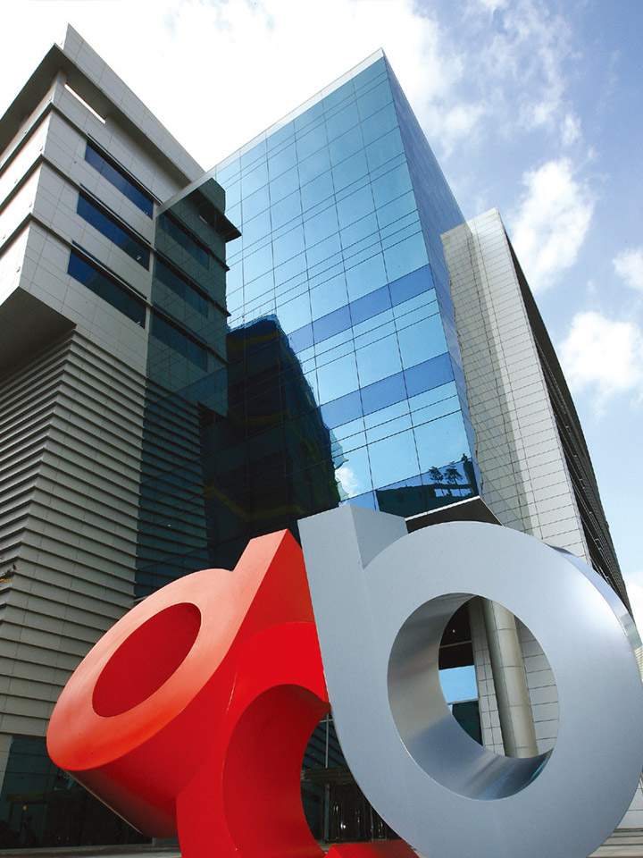
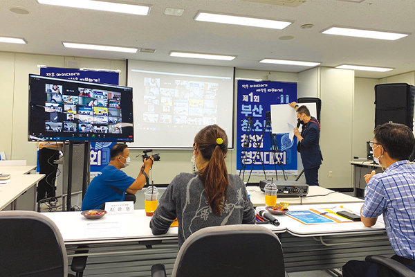
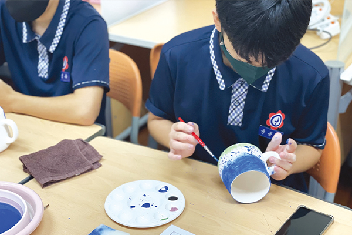

디자인을 통한
창업지원, 취업연계, 인재양성 등
다양한 일자리 창출
부산디자인진흥원
부산디자인진흥원은 코로나19 상황 속에서도 지난해 ‘부산광역시 디자인 산업 육성을 위한 지원’ 등 기관경영과 사업 부문 등 다양한 분야에서 우수한 성과를 거둔 것으로 나타났다. 특히 부산시 사회적경제 활성화를 위해 사회적기업가 육성 및 창업지원을 실시해 보육기업 중 9개사가 예비사회적기업에 선정되는 등 디자인 주도의 일자리 창출에 힘쓰고 있다. 올해도 디자인경영시스템을 정비하고 체계적인 시민행복 디자인 도시 부산을 추진해나갈 계획이다.
글 한지영(부산디자인진흥원 홍보팀 대리)
아시아로 도약하는 디자인 융복합 중심기관
부산디자인진흥원은 부산, 울산, 경남 세 개 지역의 디자인 진흥을 위해 2006년에 산업통상자원부가 지원한 부산시 산하 출연기관으로 설립됐다. 디자인을 통한 부산의 지역경제 활성화를 위해 다양한 기업지원 사업뿐만 아니라 부산을 넘어 울산과 경남지역으로도 범죄예방 환경디자인 개선을 중심으로 수혜대상을 확대하는 등 디자인 진흥이라는 공공기관으로서의 사명에 충실하고 있다.
특히 다양한 사업 추진에 노력한 결과 예산 규모가 5년 전에 비해 2배 이상 증가하였으며, ‘센터’라는 이름이 주는 사업 추진의 한계를 벗고, 진흥기관으로서의 역할을 다하기 위해 2019년도에는 부산디자인센터에서 부산디자인진흥원으로 명칭도 변경했다.
“아시아로 도약하는 디자인 융복합 중심기관”이라는 비전 아래 베트남 하노이에 디자인 교류사무소를 개소하여 글로벌 거점을 확보하고, 부산산업디자인전람회를 국제대회로 발전시켜 IBDA(‘입다’, 부산국제디자인대회) 개최 등 부산의 인적·물적 디자인 역량을 아시아에 수출하는 “디자인 세일즈 리더”로서의 역할도 수행하고 있다.
또한 디자인 주도의 창업지원, 인재양성, 취업지원 등 일자리 창출 부분에도 노력을 아끼지 않고 있다. 최근 ’18, ’19 성과에 이어 3회 연속(코로나19로 ’20년 성과평가 미실시) 부산시 일자리 창출 실적을 인정받아 최우수를 달성하며 부산시 일자리 창출 모범 기관의 모습을 보였다.

(재)부산디자인진흥원 성과와 평가
(재)부산디자인진흥원은 일자리 창출 우수시책, 일자리 창출 노력도를 평가하는 ‘부산광역시 일자리창출 실적 평가’에서 2018년, 2019년에 이어 3회 연속 출자·출연기관 중 최우수등급을 달성하며 디자인주도 일자리 창출의 효과성을 증명하고 있다.
부산광역시는 일자리의 양적·질적 개선을 위해 부산 일자리 통합평가체계를 구축하여 각 공사·공단, 출차·출연기관을 대상으로 일자리 창출 우수시책, 일자리 창출 추진실적 등을 평가해오고 있다.
2019년은 코리아디자인멤버십 등 취업지원 사업과 예비 창업자들을 위한 컨설팅, 부산패션창작스튜디오 운영, 소셜프랜차이즈 사업, 창업도약 패키지 사업 등 일자리 지원사업을 통해 일자리 신규창출 481건, 고용유지 551건을 달성했다. 청년취업아카데미, 사회적기업가 육성사업, 시민디자인아카데미, 디자인 진로체험 프로그램 등 인력양성사업을 통해서는 약 5,000여 명에 대한 교육과 인력양성을 지원했다.
2020년의 경우 일자리 통합 평가는 코로나19로 인해 진행하지 않았지만, 교육부로부터 ‘진로탐색활동 협력 분야 교육부 장관 표창’을 수상하기도 했다. 2014년부터 6년간 3만 3천여 명의 학생에게 디자인 분야의 다양한 진로체험지원을 통한 진로교육 활성화에 기여한 공로를 인정받은 것이다.


창업기업 성장에 필요한 맞춤서비스 제공
2021년 부산디자인진흥원은 권역형 디자인 주도 창업 거점센터 운영, 사회적경제 활성화 지원, 지역 맞춤형 디자인 일자리 창출, 패션·의류산업 일자리 창출 노력을 통해 206개사에 디자인 개발지원 51건, 자금지원 101억 원, 교육 및 컨설팅 지원 670건을 진행하여 총 780개의 일자리를 창출하였다.
특히 중소벤처기업부가 공모하는 ‘창업도약 패키지지원사업’의 주관기관으로 2018년부터 창업 3~7년차 기업에 사업화 자금과 디자인 특화 프로그램 지원 등 창업기업 성장에 필요한 맞춤서비스를 제공하고 있으며, 부산시 사회적경제 활성화를 위해 사회적기업가 육성 및 창업지원을 실시하여 보육기업 중 9개사가 예비사회적기업에 선정되는 등 디자인주도 일자리 창출에 힘쓰고 있다.
영국의 한 조사결과에 따르면, 디자인에 1파운드를 투자하면 기업 매출은 20파운드, 순영업이익은 4파운드, 수출 5파운드 증가의 효과가 있으며, 디자인 역량을 보유한 인력은 평균 인력 대비 47% 높은 생산성을 보이고 있다고 한다.
부산디자인진흥원은 이러한 디자인 인재를 육성하기 위해 정부 정책과 부산시정에 맞추어 일자리 중심의 기관운영 체계를 수립했다. 2017년에 디자인 주도 일자리 창출 TF팀을 편성, 2019년에는 취업창업진흥팀으로 정식 조직화하는 등의 노력을 기울였다.
그 결과로 3년 연속 일자리 창출 실적 평가 최우수등급을 달성하는 등 디자인 주도의 일자리 창출의 필요성과 효과성을 증명했으며, 앞으로도 디자인 융합 인재 양성을 통해 다양한 일자리를 창출하여 훌륭한 인재들이 역외로 유출되지 않고, 부산의 산업을 이끌어나가도록 지원할 계획이다.
부산광역시 디자인 산업 육성을 위한 지원 등 고품질 행정력 증명
부산디자인진흥원은 코로나19 상황 속에서도 지난해 ‘부산광역시 디자인 산업 육성을 위한 지원’ 등 기관 경영과 사업 부문 등 다양한 분야에서 우수한 성과를 거두었다.
기관 경영 관련 수상은 ▲부산광역시 디자인산업 육성 유공표창 ▲부산광역시 중소기업제품 공공구매 유공표창 ▲부산광역시 안전문화운동 추진 유공표창 ▲부산광역시 지방공공기관 발전 유공표창으로 부산광역시의 디자인산업 육성과 지역 산업 생태계를 위해 노력한 성과를 증명했다.
특히 부산광역시 디자인산업 육성을 위해 부산시 정책반영을 위한 과제 기획을 수립하고, 디자인산업 육성 지원 조례제정 관련 실무지원을 노력하는 등 부산디자인진흥원의 설립목적에 부합하는 정체성을 강화하기 위한 노력을 인정받았다.
사업 부문 수상은 ▲부산광역시 일자리 창출 지원 유공표창 ▲부산광역시 창업지원기관 사업성과 유공표창 ▲부산지방중소벤처기업청 창업기업 육성 유공표창 ▲문화체육관광부 콘텐츠 산업(패션 분야) 발전 유공표창 ▲울산광역시 공공디자인 업무추진 유공 표창 등으로 부산디자인진흥원의 경쟁력을 증명하는 계기가 되었다.
이는 부산디자인진흥원이 향후 시민이 체감할 수 있는 지속가능한 디자인 정책을 개발할 수 있는 역량을 입증한 유의미한 성과이며, 이러한 성과를 바탕으로 디자인경영시스템을 정비하고 체계적인 시민 행복 디자인 도시 부산을 추진하기 위해 더욱 정진할 계획이다.
부산디자인진흥원 강필현 원장
“이제는 부산디자인진흥원이 주축이 되어 지속가능한 부산의 미래가치를 창출하는 부산디자인산업 육성의 기반을 준비해야 할 때입니다. 기관의 모든 구성원이 전문 역량을 지속가능하게 성장시킬 수 있는 시스템 구축과 구성원 개인과 기관의 비전 공유를 통해 부산이 국내 디자인 산업의 메카로 자리매김하도록 최선을 다하겠습니다.”